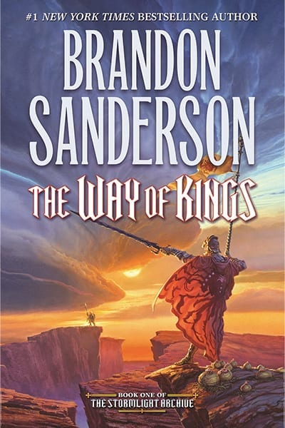
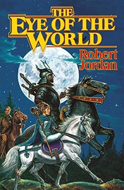

Book Club
Harry Potter and the Sorcerer's Stone: By J.K Rowling
 s
s
In Harry Potter and the Sorcerer's Stone, Harry, an orphan, lives with the Dursleys, his horrible aunt and uncle, and their abominable son, Dudley. One day just before his eleventh birthday, an owl tries to deliver a mysterious letter—the first of a sequence of events that end in Harry meeting a giant man named Hagrid. Hagrid explains Harry's history to him: When he was a baby, the Dark wizard, Lord Voldemort, attacked and killed his parents in an attempt to kill Harry; but the only mark on Harry was a mysterious lightning-bolt scar on his forehead. Now he has been invited to attend Hogwarts School of Witchcraft and Wizardry, where the headmaster is the great wizard Albus Dumbledore. Harry visits Diagon Alley to get his school supplies, especially his very own wand. To get to school, he takes the Hogwarts Express from platform nine and three-quarters at King's Cross Station. On the train, he meets two fellow students who will become his closest friends: Ron Weasley and Hermione Granger. Harry is assigned to Gryffindor House at Hogwarts, and soon becomes the youngest-ever Seeker on the House Quidditch team. He also studies Potions with Professor Severus Snape, who displays a deep and abiding dislike for Harry, and Defense Against the Dark Arts with nervous Professor Quirrell; he and his friends defeat a mountain troll, help Hagrid raise a dragon, and explore the wonderful, fascinating world of Hogwarts. But all events lead irrevocably toward a second encounter with Lord Voldemort, who seeks an object of legend known as the Sorcerer's Stone...
The Fellowship of the Ring: By J. R. R. Tolkien

One Ring to rule them all, One Ring to find them, One Ring to bring them all and in the darkness bind them. In ancient times the Rings of Power were crafted by the Elven-smiths, and Sauron, the Dark Lord, forged the One Ring, filling it with his own power so that he could rule all others. But the One Ring was taken from him, and though he sought it throughout Middle-earth, it remained lost to him. After many ages it fell into the hands of Bilbo Baggins, as told in The Hobbit. In a sleepy village in the Shire, young Frodo Baggins finds himself faced with an immense task, as his elderly cousin Bilbo entrusts the Ring to his care. Frodo must leave his home and make a perilous journey across Middle-earth to the Cracks of Doom, there to destroy the Ring and foil the Dark Lord in his evil purpose. “A unique, wholly realized other world, evoked from deep in the well of Time, massively detailed, absorbingly entertaining, profound in meaning.”—The New York Times
1984: By George Orwell

“The Party told you to reject the evidence of your eyes and ears. It was their final, most essential command.” Winston Smith toes the Party line, rewriting history to satisfy the demands of the Ministry of Truth. With each lie he writes, Winston grows to hate the Party that seeks power for its own sake and persecutes those who dare to commit thoughtcrimes. But as he starts to think for himself, Winston can’t escape the fact that Big Brother is always watching... A startling and haunting novel, 1984 creates an imaginary world that is completely convincing from start to finish. No one can deny the novel's hold on the imaginations of whole generations, or the power of its admonitions—a power that seems to grow, not lessen, with the passage of time.
Twilight: By Stephenie Meyer

Isabella Swan's move to Forks, a small, perpetually rainy town in Washington, could have been the most boring move she ever made. But once she meets the mysterious and alluring Edward Cullen, Isabella's life takes a thrilling and terrifying turn. Up until now, Edward has managed to keep his vampire identity a secret in the small community he lives in, but now nobody is safe, especially Isabella, the person Edward holds most dear. The lovers find themselves balanced precariously on the point of a knife — between desire and danger. Deeply romantic and extraordinarily suspenseful, Twilight captures the struggle between defying our instincts and satisfying our desires. This is a love story with bite.
The Way of Kings: By Brandon Sanderson
The Way of Kings" is an epic fantasy novel that plunges readers into the richly imagined world of Roshar, where powerful magic, political intrigue, and personal struggles collide. As the first book in Brandon Sanderson's Stormlight Archive series, it follows multiple characters, including a disgraced warrior, a mysterious assassin, and a young noblewoman, as they navigate their own paths while the fate of their world hangs in the balance. With its intricate world-building, dynamic characters, and gripping storytelling, "The Way of Kings" is a captivating journey into a realm of heroism and sacrifice.
The Eye of the World: By Robert Jordan
